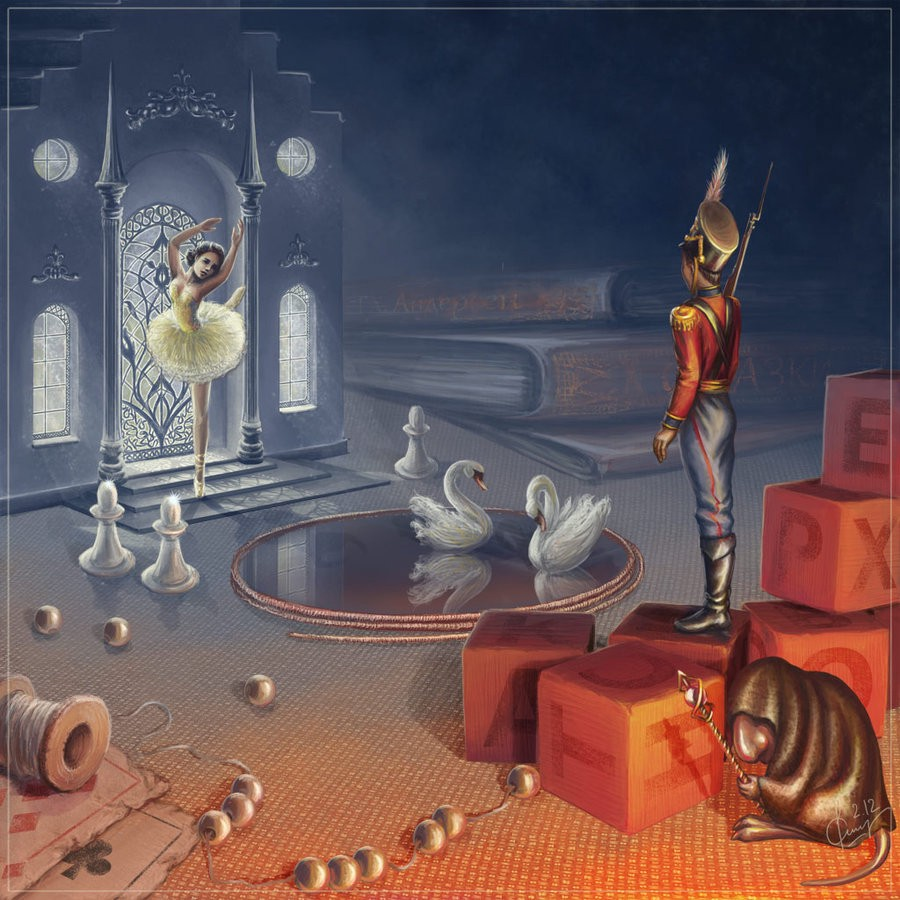

Soldățelul de plumb
„Soldățelul de plumb” (în daneză Den standhaftige tinsoldat) este un basm cult scris de Hans Christian Andersen despre dragostea unui soldat de plumb pentru o balerină din hârtie. A fost publicat prima oară la 2 octombrie 1838 în volumul Eventyr, fortalte for Børn. Ny Samling. Første Hefte. Broșura editată de C.A. Reitzel din 1838 mai conținea basmele „Margareta” și „Lebedele” ale lui Andersen. Povestea „Soldățelul de plumb” a fost prima lucrare a lui Andersen care nu se bazează pe un basm popular sau pe un model literar. Basmul a fost adaptat de numeroase ori, inclusiv ca balet sau film de animație.
